Hi, I'm
Muhammad Firly
Menghubungkan dunia sistem hardware, embedded devices, dan backend modern berkecepatan tinggi dengan analitik data berbasis Python, SQL, dan kecerdasan buatan.
Passionate In Building End-to-End Solutions
Dari perancangan sirkuit perangkat keras mikroprosesor hingga pemrosesan data di sisi server dan visualisasi analitik.
01. Engineering Philosophy & Profile
Halo! Saya Muhammad Firly, seorang pengembang yang memiliki ketertarikan mendalam dalam integrasi teknologi Backend Development, Internet of Things (IoT) Hardware, dan Data Science & AI.
Saya terbiasa merancang arsitektur sistem dari dasar: mulai dari pemilihan komponen sensor dan modul mikrokontroler, perakitan sirkuit prototipe, pengiriman telemetri data real-time, hingga pengolahan basis data SQL dan visualisasi analitik untuk memecahkan masalah nyata.
Core Competencies & Capabilities
Kombinasi keahlian teknis dalam perangkat keras, backend arsitektur, dan analitik data.
Backend & Logic
Membangun logika aplikasi yang tangguh, modular, dan terstruktur rapi.
IoT & Hardware
Perancangan prototipe perangkat pintar, sensor, dan komunikasi data.
Data & AI
Eksplorasi data, permodelan dasar kecerdasan buatan, dan visualisasi.
IT & Hardware Ops
Fondasi perangkat keras komputer, sistem operasi, jaringan & version control.
Featured Projects & Hardware
Dokumentasi prototipe fisik perangkat IoT, pengujian laboratorium, dan dashboard telemetri monitoring.
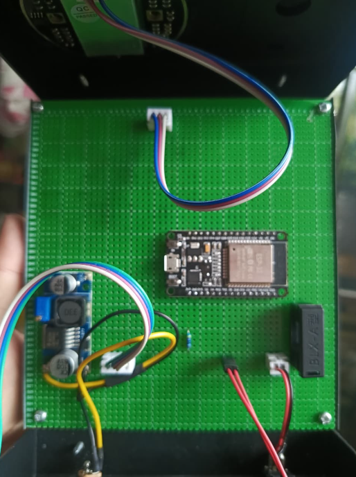
IoT Sensor Interface & Microcontroller Unit
Perakitan sirkuit sirkulasi sensor dan mikrokontroler untuk akuisisi sinyal fisik secara kontinu dengan proteksi interferensi tegangan.
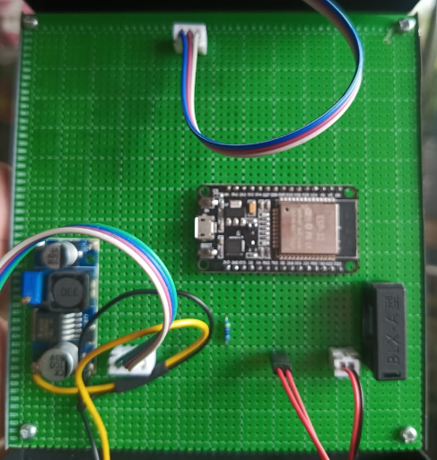
Embedded Power & Signal Regulator Hub
Unit pengatur distribusi tegangan dan pembagian bus sinyal sensor agar perangkat mampu bekerja stabil tanpa fluktuasi data.
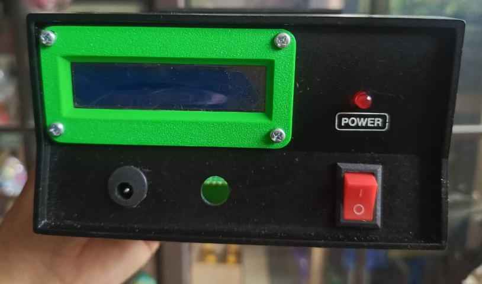
Integrated Hardware Assembly & Enclosure
Desain struktur kemasan pelindung perangkat keras agar praktis saat dibawa untuk pengujian lapangan dan instalasi monitoring.
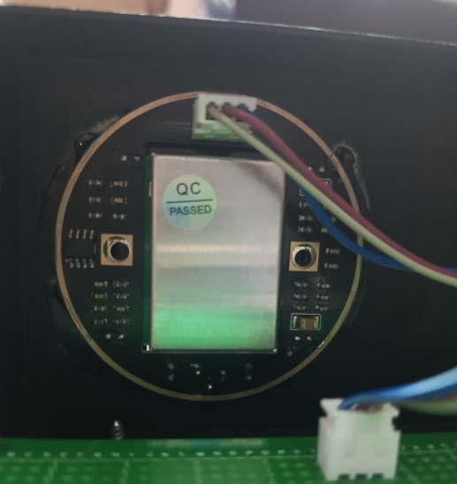
Precision Field Sensing & Transceiver Node
Unit penginderaan telemetri yang dioptimalkan untuk responsifitas data tingkat tinggi dengan konsumsi daya yang efisien.
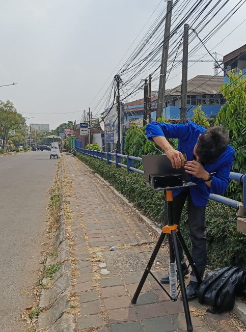
Live Telemetry & Sensor Monitoring System
Antarmuka visualisasi pemantauan data sensor secara live untuk memverifikasi akurasi bacaan perangkat terhadap parameter acuan.
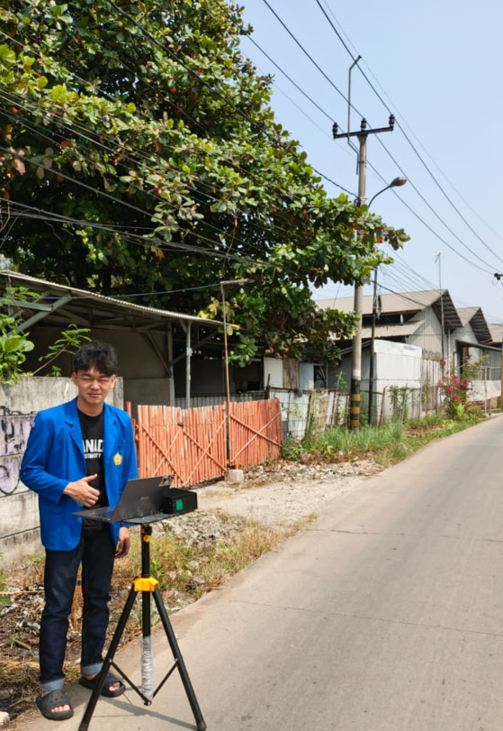
Field Deployment & System Validation Test
Pengujian langsung kestabilan transfer data, logging riwayat pembacaan, dan analisis deviasi sinyal pada kondisi operasional sebenarnya.
Official Certifications
Sertifikasi keahlian terverifikasi di bidang Artificial Intelligence, Data Science, Python, SQL, dan IT Essentials. Klik untuk memperbesar dokumen resmi.
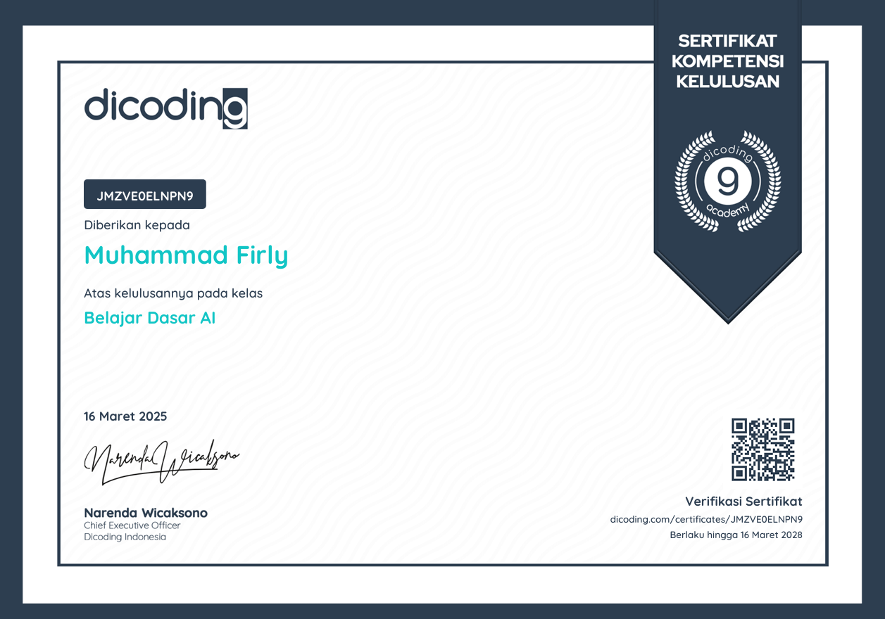
Belajar Dasar AI (Artificial Intelligence)
Pemahaman menyeluruh mengenai cara kerja kecerdasan buatan, konsep machine learning, neural networks, dan implementasi modern.
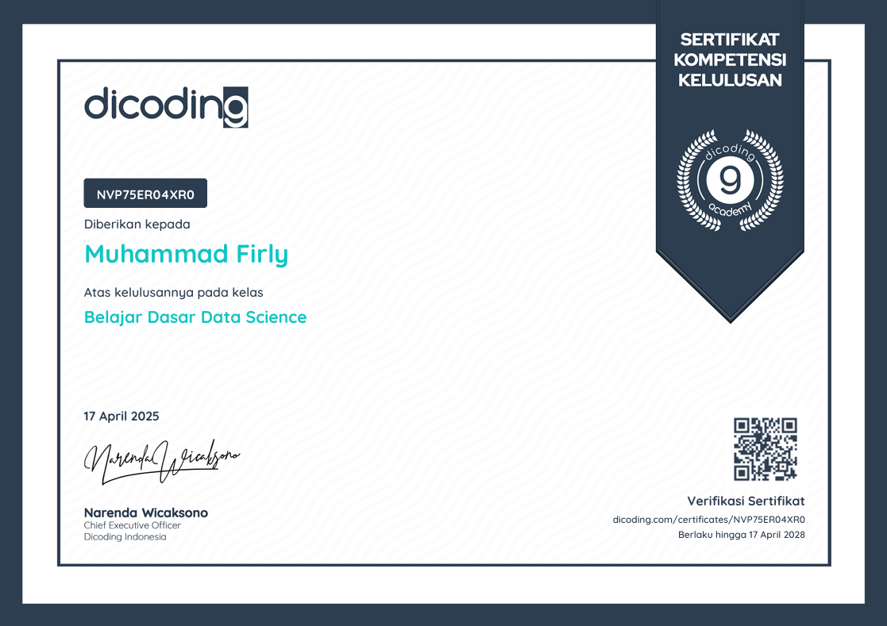
Belajar Dasar Data Science
Metodologi analisis data, eksplorasi pola statistik, data wrangling, serta penerapan logika sains data untuk penyelesaian masalah.
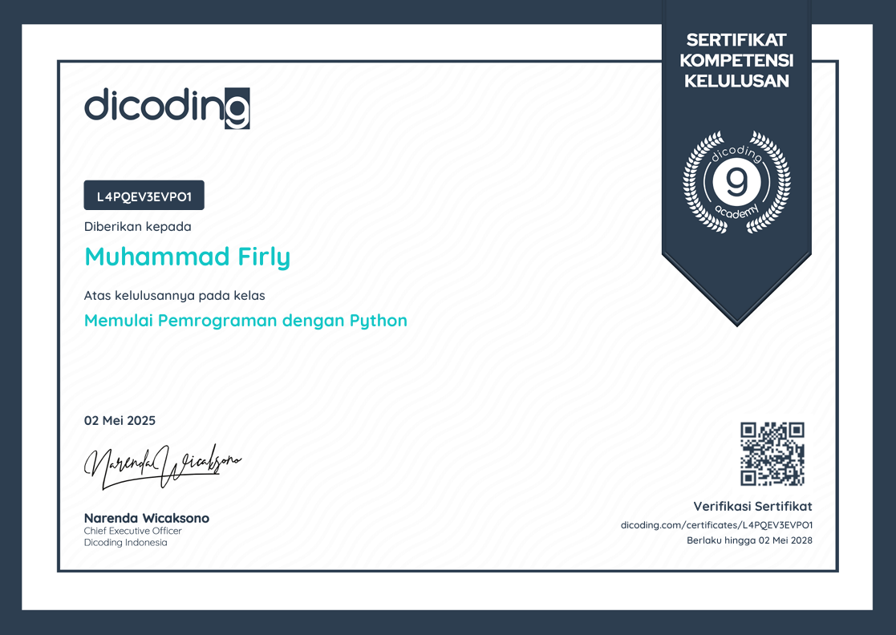
Belajar Dasar Pemrograman Python
Fondasi sintaksis Python, manajemen memory, struktur kontrol alur, penanganan error, serta standard library untuk efisiensi coding.
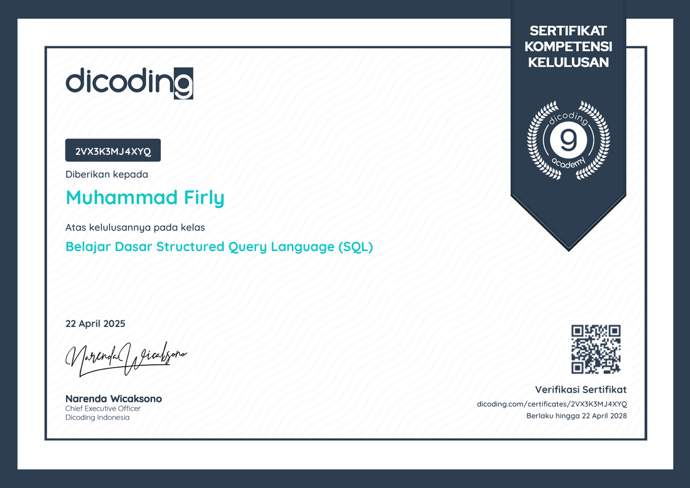
Belajar Dasar Structured Query Language (SQL)
Pondasi pengoperasian database relasional, filter kueri lanjutan, operasi join, agregasi data grup, dan integritas data.
Belajar Dasar Visualisasi Data
Prinsip visual storytelling data, representasi grafis informasi yang intuitif, serta pemilihan diagram yang akurat untuk laporan.
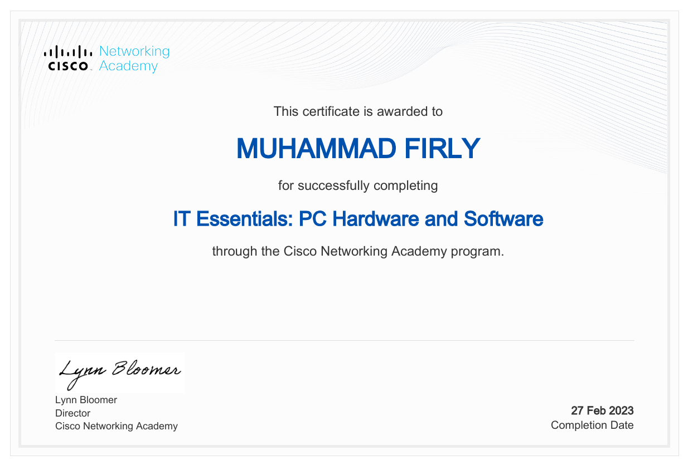
IT Essentials: PC Hardware and Software
Arsitektur komputer, diagnostik perangkat keras, konfigurasi sistem operasi, jaringan dasar, dan prosedur keamanan infrastruktur IT.
How I Build & Validate Solutions
Proses sistematis dari perencanaan arsitektur hingga deployment dan evaluasi telemetri.
1. System Planning
Menganalisis kebutuhan data, spesifikasi komponen sensor, toleransi daya, dan pemilihan protokol komunikasi.
2. Hardware Prototyping
Perakitan sirkuit fisik, soldering, pengemasan modular, dan kalibrasi sensor menggunakan mikrokontroler.
3. Backend & Telemetry
Pembangunan pipeline penerima data, pemrosesan logika backend dengan Python, dan penyimpanan database SQL.
4. Field Testing & Analytics
Uji coba kestabilan di lapangan, visualisasi grafik telemetri live, serta evaluasi akurasi sistem secara komprehensif.
Let's Build Something Extraordinary
Terbuka untuk kolaborasi proyek, diskusi teknis sistem backend & IoT, maupun peluang karir.
Kirim Pesan Langsung
Formulir ini akan otomatis menyiapkan draft email langsung ke kotak masuk saya.